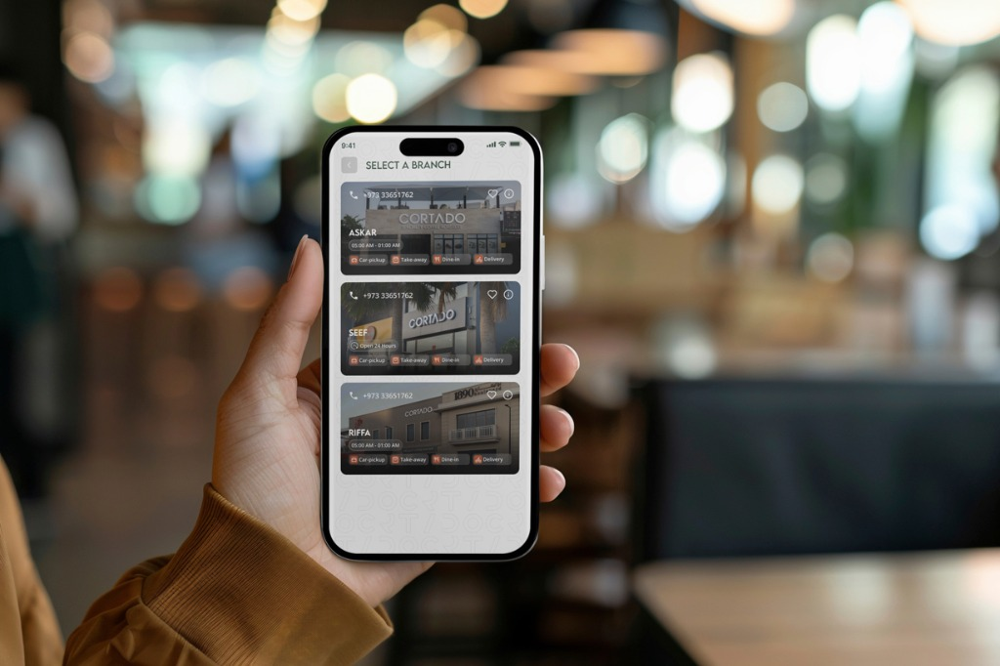
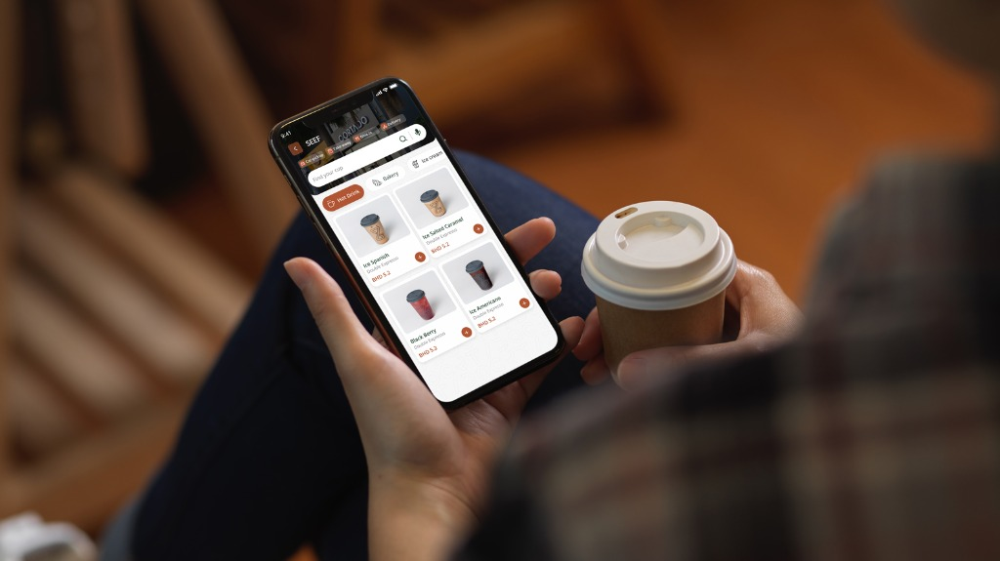
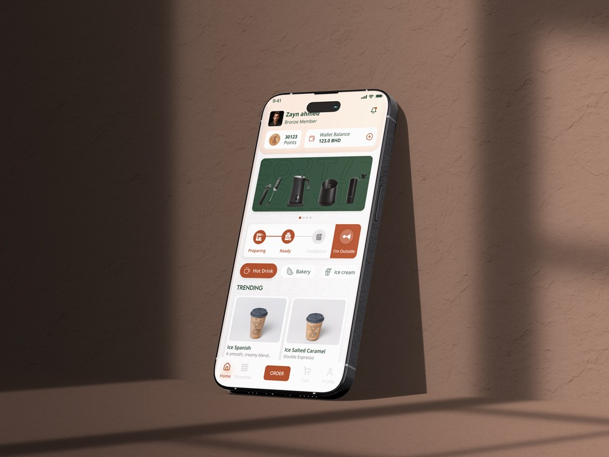

Cortado
Café Ordering & Loyalty App
A mobile ordering experience that makes it easier for customers to discover, order, and collect from Cortado cafés through delivery, dine-in, takeaway, and car pickup.

Making everyday café ordering simpler and more convenient.
Cortado is a mobile café experience designed to connect customers with their favorite locations through multiple ordering options.
The app brings delivery, dine-in, takeaway, and car pickup into one experience, while also combining membership, rewards, wallet, favorites, and order history.
The goal was simple: make ordering coffee faster, clearer, and more convenient from discovery to pickup.
Designing an experience around the way customers actually order.

Making branch selection easier
Customers can select their preferred Cortado location and immediately understand its availability, operating hours, contact details, and supported fulfillment options.

The menu was designed for quick browsing and easy decision-making. Clear categories, product photography, pricing, and customization options help customers find and personalize their drinks without unnecessary steps.
Reducing friction during pickup
One of the key challenges was improving the experience for customers arriving by car. The order status follows a simple sequence:
Preparing → Ready → Completed → I'm Outside
The “I'm Outside” action allows customers to notify the café team when they arrive, reducing unnecessary calls and waiting.

Designing the features customers use most.
A personalized starting point
The home experience brings together membership status, wallet balance, rewards, popular products, and quick access to recent orders.
Making payments and rewards easier to access
The integrated wallet gives customers a simple way to manage their balance and use it during checkout. Rewards and points are incorporated into the ordering experience, making loyalty part of the overall journey.
Clear status from preparation to pickup
The order tracker gives customers a clear view of their order progress. For car pickup, the “I'm Outside” action creates a direct connection between the customer and café team when they arrive.
Balancing multiple ordering options without adding complexity.
Unifying four fulfillment methods
Customers may want delivery, dine-in, takeaway, or car pickup depending on the situation. The challenge was to bring all four options into one experience while keeping the journey simple.
Improving car pickup
Traditional pickup processes can involve unnecessary waiting or communication between customers and café staff. Cortado needed a clearer way for customers to communicate their arrival.
Making loyalty part of the experience
Rewards should feel like part of the ordering experience rather than a separate feature. The goal was to make membership, points, and wallet information accessible without distracting from ordering.
Mapping the journey from discovery to pickup.
I mapped the key customer journeys in Miro and Figma to understand how users move through the experience. The focus was on reducing unnecessary steps and creating clear transitions between browsing, customization, checkout, preparation, and pickup.
The Cortado End-to-End User Journey
Select a Branch
Choose a preferred Cortado location and fulfillment method.
Explore & Customize
Browse the menu and customize drinks based on individual preferences.
Place the Order
Review the order and complete checkout using the available payment options.
Track Preparation
Follow the order status while the café prepares the order.
Collect the Order
Pick up at the café, use takeaway, or notify the team through the car pickup flow.
A visual system inspired by the café experience.
The visual direction combines warm coffee-inspired tones, clean layouts, strong product photography, and clear typography to create a welcoming and modern mobile experience. The interface was designed to keep the product visually engaging while maintaining a straightforward ordering experience.
Making branch selection easier to understand
Branch information brings together location details, operating hours, contact options, and available fulfillment methods.
- Clear branch information
- Fulfillment filters
- Operating hours
- Favorite locations
- Quick contact actions
Helping customers find and personalize their order
The menu organizes products into clear categories while allowing customers to customize their drinks without adding unnecessary complexity.
- Clear product categories
- Product photography
- Easy customization
- Pricing in BHD
- Simple navigation
Keeping customers informed beyond checkout
The tracking experience gives customers a clear view of their order status while loyalty features make rewards easier to understand and use.
- Clear order progress
- “I'm Outside” car pickup action
- Loyalty points
- Membership tiers
- Wallet balance
Creating a simpler digital ordering experience for Cortado customers.
Growth in café orders through the digital ordering experience.
Strong initial adoption following the app launch.
A significant share of orders used the car pickup experience.
Designing for both customers and café operations.
Cortado was more than a mobile ordering interface. The experience needed to work for customers while also supporting the operational needs of café staff.
The project reinforced the importance of designing end-to-end journeys—from selecting a branch and placing an order to preparation, pickup, and loyalty.
It also showed how small interaction decisions, such as the “I'm Outside” action, can simplify real-world experiences beyond the screen.
Frequently Asked Questions
Key insights into the Cortado design process, constraints, and execution.
Cortado is a mobile café experience designed to connect customers with their favorite locations through delivery, dine-in, takeaway, and car pickup, while integrating loyalty rewards and a digital wallet.
I was the UI/UX Designer responsible for the end-to-end user experience, including user flows, wireframing, interface design, design system, and developer handover.
Balancing four distinct fulfillment methods in a single interface without adding friction, while creating a seamless curbside arrival experience for customers arriving by car.
The project was designed over a 2-month timeline from discovery to final handover.
I designed the complete mobile application experience, covering branch selection, menu browsing, drink customization, checkout, order tracking, loyalty membership, and the digital wallet.
Cortado Café Mobile Experience
Bahrain · 2026